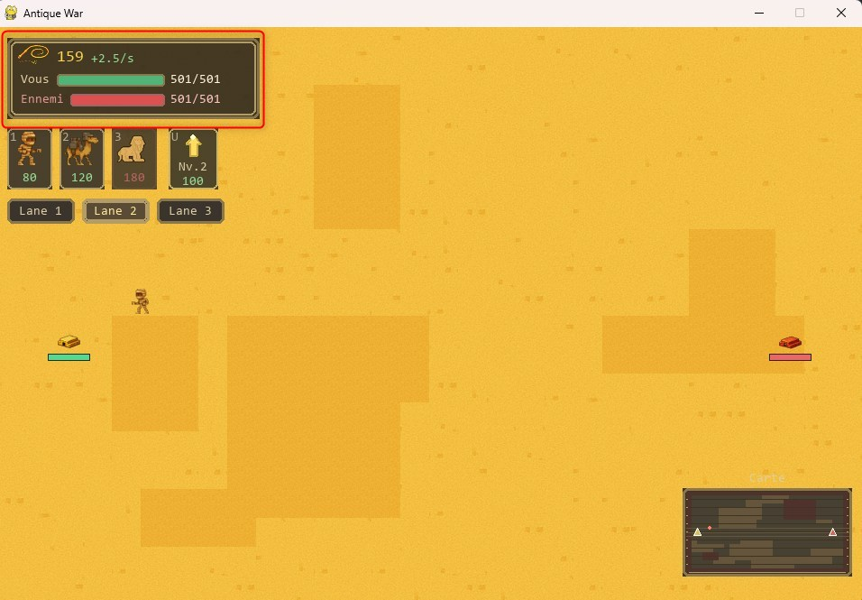

Interface du jeu
Avant de lancer une partie, il est recommandé de consulter la section Menus du jeu afin de comprendre les différentes options disponibles et la configuration du jeu.
L’interface d’Antique War permet au joueur d’accéder rapidement aux informations essentielles et d’interagir avec le jeu pendant une partie.
Elle est organisée autour de plusieurs zones distinctes à l’écran.
Vue d’ensemble
L’écran de jeu est composé de plusieurs éléments :
- une zone de jeu centrale représentant le désert ;
- une zone d’informations située en haut à gauche ;
- une barre d’actions permettant d’invoquer des unités et d’améliorer la pyramide ;
- une mini-carte située en bas à droite.
Zone de jeu centrale
La zone centrale affiche l’environnement de jeu.
Elle contient :
- le terrain désertique ;
- les pyramides du joueur et de l’ennemi ;
- les unités alliées et ennemies ;
- les obstacles présents sur le terrain.
Les unités se déplacent automatiquement dans cette zone en fonction de leur comportement et du terrain.

Zone d’informations
La zone d’informations est située en haut à gauche de l’écran.
Elle affiche :
- la quantité actuelle de monnaie (𓍯) ;
- la vitesse de production de la monnaie par seconde ;
- les points de vie de la pyramide du joueur ;
- les points de vie de la pyramide ennemie.
Les points de vie sont représentés par des barres colorées associées à chaque pyramide.

Barre d’actions
La barre d’actions permet au joueur d’effectuer les actions principales.
Elle contient :
- les boutons d’invocation des unités disponibles (Momie, Dromadaire blindé, Sphinx) ;
- le coût de chaque unité affiché sous son icône ;
- un bouton permettant d’améliorer la pyramide, avec indication du niveau actuel et du coût.
Les boutons deviennent utilisables lorsque le joueur dispose de suffisamment de monnaie.

Sélection des voies
Sous la barre d’actions, le joueur peut sélectionner une voie de déplacement.
Trois voies sont disponibles :
- Lane 1
- Lane 2
- Lane 3
La voie sélectionnée détermine le chemin emprunté par les unités invoquées.

Mini-carte
Une mini-carte est affichée en bas à droite de l’écran.
Elle représente :
- la position des pyramides ;
- la disposition générale du terrain ;
- les principales zones de déplacement.
Elle permet d’avoir une vision globale de la zone de jeu.